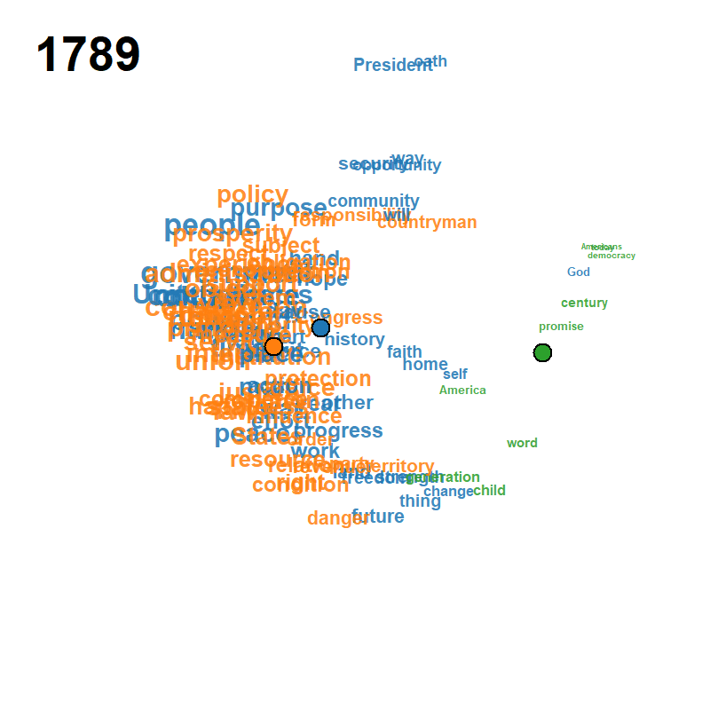
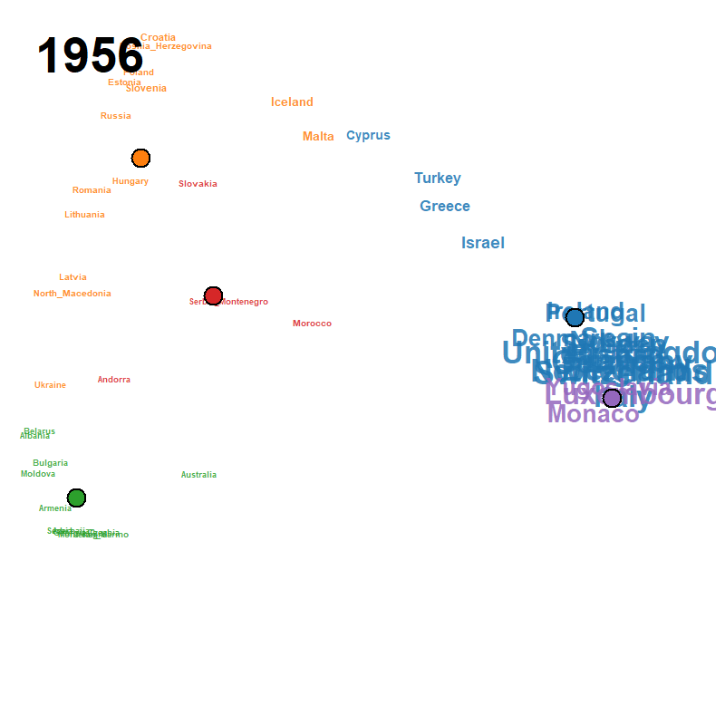

R package implementing the methodology of Satoh (2026): visualisation of longitudinal binary data (a time × attribute 0/1 matrix) by a locally weighted Jaccard distance, multidimensional scaling with sequential modification (Mizuta, 2003), Ward clustering on a trajectory distance, and a functional Rousseeuw silhouette criterion for joint selection of bandwidth and class number.
Animated examples
Each frame plots the attributes on the modified MDS configuration at calendar year , with font/symbol size proportional to the smoothed occurrence and a fading trail of class centroids over the previous frames. Cluster colours follow the default Classic Tableau palette and the silhouette criterion jointly selects from a user-supplied grid.
| Peace Declaration of Hiroshima (1947–2025, , ) | US Presidential Inaugural Addresses (1789–2021, , ) | Eurovision Song Contest (1956–2023, , ) |
|---|---|---|
 |
 |
 |
Installation
# Install from GitHub
remotes::install_github("ksatohds/ljmds", build_vignettes = TRUE)Quick start
library(ljmds)
# Peace Declaration of Hiroshima (built-in)
d <- ljmds.read.csv("peace_declaration") # year + 95 keyword 0/1 columns
# d <- ljmds.read.csv("inaugural") # alternative built-in
# d <- ljmds.read.csv(file = "my.csv") # external CSV
# Joint (h, k) selection over a grid
# k = 1, 2 are excluded by leaving them out of k.grid (default 3:6).
sel <- ljmds.select(d$X, d$t,
h.grid = c(3, 4, 5, 6, 8, 10, 12, 15, 20))
sel$h.hat # 8
sel$k.hat # 4
sel$S.hat # 0.201
# Full pipeline
fit <- ljmds.pipeline(d$X, d$t, h = sel$h.hat, k = sel$k.hat)
# Figures (default class.col = grDevices::palette.colors(8, "Classic Tableau"))
plot(fit, type = "trajectory") # centroid trajectories on MDS map
plot(fit, type = "dendrogram") # Ward dendrogram + class boxes
plot(fit, type = "cmd") # time-collapsed MDS of trajectory distance
plot(fit, type = "means") # class mean occurrence curves
plot(fit, type = "panels") # per-class small multiples (square layout)
plot(sel) # silhouette heatmap with maximizer marker
# GIF animation
ljmds.animate(fit, file = "peace_declaration.gif", trail = 10, fps = 2)Data
Three longitudinal binary datasets ship under inst/extdata:
| File | n × p | Domain | Coverage |
|---|---|---|---|
peace_declaration.csv |
78 × 95 | Text | Peace Declaration of Hiroshima, 1947–2025 (no 1950) |
inaugural.csv |
59 × 106 | Text | US Presidential Inaugural Addresses, 1789–2021 |
eurovision.csv |
68 × 52 | Non-text | Eurovision Song Contest country participation, 1956–2023 |
Each file has a header row, column 1 named year, and columns 2.. giving 0/1 indicators. The first two contain no source text — they are derivative summaries.
Provenance
peace_declaration.csv (78 × 95, 1947–2025)
- Source: scraped from the City of Hiroshima official site (English Peace Declarations) at https://www.city.hiroshima.lg.jp/english/.
-
Pre-processing: tokenization, part-of-speech filtering and lemmatization with UDPipe (Straka & Straková, 2017) using the English Universal Dependencies model
english-ewt-ud-2.5-191206.udpipe(CC-BY-SA-NC). Adjacent noun pairs were merged into compound keywords (e.g.atomic_bomb,nuclear_weapons,United_Nations); words appearing 20+ times in the whole corpus were retained as keywords. - Year coverage: 78 years (1950 omitted because no declaration was delivered that year).
- Reproducibility: the source texts were scraped with rvest, then tokenized and filtered with UDPipe + quanteda; the bundled CSV is the final 0/1 matrix without any source text.
inaugural.csv (59 × 106, 1789–2021)
-
Source: derived from the
data_corpus_inauguralobject shipped with thequantedaR package (Benoit, K. et al., 2018, JOSS 3(30), 774). -
Pre-processing: same UDPipe + quanteda pipeline as the Peace Declarations; words appearing 50+ times retained as keywords; adjacent noun pairs merged (e.g.
United_States). - Year coverage: 59 inaugural addresses delivered between 1789 (Washington) and 2021 (Biden), at roughly four-year cadence.
eurovision.csv (68 × 52, 1956–2023)
- Source: derived from the Eurovision dataset of Spijkervet (2020) and the Mirovision living-dataset project of Burgoyne, Spijkervet & Baker (2023) at https://github.com/Amsterdam-Music-Lab/mirovision, released under the MIT licence by the Amsterdam Music Lab at the University of Amsterdam.
- Pre-processing: each row is a contest year, each column is a country, and the cell is 1 when that country fielded a contestant in that year and 0 otherwise. The 2020 contest was cancelled and is absent from the matrix.
- Year coverage: 68 contest years from 1956 (the first Eurovision Song Contest) to 2023.
-
Citations:
- Spijkervet, J. (2020). The Eurovision Dataset (version 1.0). Zenodo. doi:10.5281/zenodo.4036457
- Burgoyne, J. A., Spijkervet, J. & Baker, D. J. (2023). Measuring the Eurovision Song Contest: a living dataset for real-world MIR. In Proc. 24th International Society for Music Information Retrieval Conference (ISMIR), Milan, Italy. https://archives.ismir.net/ismir2023/paper/000097.pdf
Loading
d <- ljmds.read.csv("peace_declaration") # or "inaugural" / "eurovision"
str(d) # list(t = numeric n, X = n×p 0/1 matrix,
# keywords = column names of X)Vignettes
vignette("quickstart-peace", package = "ljmds")
vignette("quickstart-inaugural", package = "ljmds")
vignette("quickstart-eurovision", package = "ljmds")Each vignette starts from the bundled CSV and reproduces the diagnostic figures used in the corresponding application section of the paper.
References
- Rousseeuw, P.J. (1987) Silhouettes: a graphical aid to the interpretation and validation of cluster analysis. Journal of Computational and Applied Mathematics 20, 53–65.
- Mizuta, M. (2003) Multidimensional scaling for dissimilarity functions with continuous argument. Journal of the Japanese Society of Computational Statistics 15(2), 327–333.